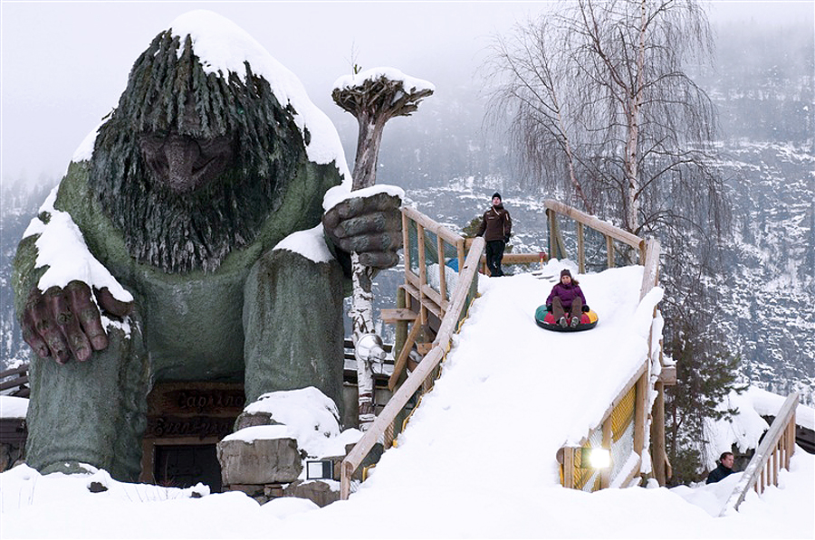
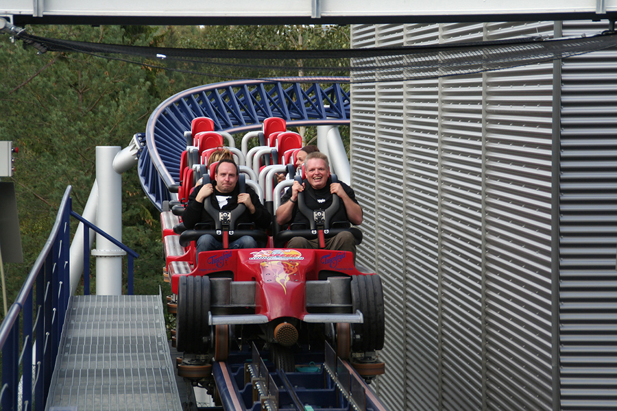
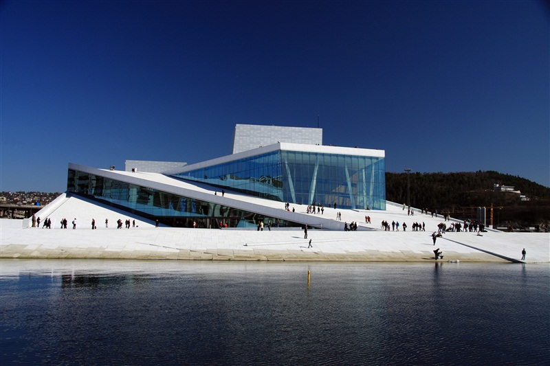
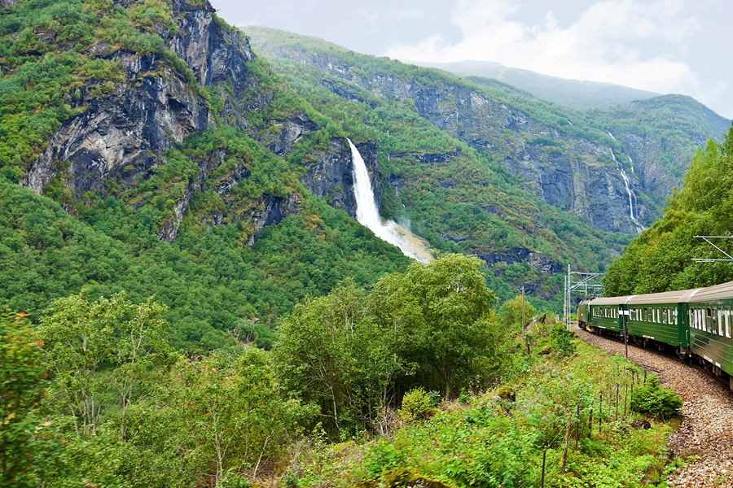

Ехать из Лиллехаммера в парк развлечений Хундерфоссен лучше всего вечером. В это время здесь начинается все самое интересное: выходят запугивать детишек и их родителей тролли и черти в жутких костюмах, начинаются веселые катания на снегоходах и надувных ватрушках-тюбингах с высоких горок, зажигает огни огромный сказочный замок.
По всему парку разбросаны десятки снежных хижин-иглу, в каждом из них – самые разные аттракционы: гигантские шахматы, выставка саней или бассейн с разноцветными шариками.
От холода спасают разожженные повсеместно жаровни и небольшие ресторанчики. Один из таких ресторанов полностью сделан изо льда. Даже напитки там наливают в ледяные стаканы. Здесь же можно остаться на ночлег в самом южном ледяном отеле в Скандинавии. Каждый номер этой холодной гостиницы декорирован различными предметами, вмороженными в стены и подсвеченными изнутри: молотками, пилами, линейками. А на ледяных кроватях расстелены теплые шкуры.
В парке более 31 аттракциона для взрослых и маленьких детей. На территории парка находится самый экстремальный аттракцион в Скандинавии - "Скоростной монстр" (Speed Monster), скорость этого аттракциона близка к скорости болида "Формулы-1".
У здания Новой оперы уникальная архитектура и огромные размеры (38 000 кв. м.). В нем размещаются три сцены и более тысячи различных помещений. Главная сцена в форме подковы предназначена для проведения концертов классической музыки. Этот зал - один из самых современных в мире, с разными вариантами трансформации и потрясающей акустикой.
В главном концертном зале, который рассчитан на 1350 мест, в спинки впереди стоящих кресел встроены экраны, где могут транслироваться субтитры на 8 языках.
Проект здания был разработан норвежским архитектурным бюро, над оформлением главного зала также трудились сами норвежцы: умельцы-лодочники с северо-западного побережья страны выполняли резьбу по балтийскому дубу, украшая балконы, а стеклодувы сделали самую большую в Норвегии стеклянную люстру , составленную почти из шести тысяч элементов, каждый из которых выполнен вручную.
Фломская железная дорога - чудо инженерной техники и одна из главных достопримечательностей Норвегии. Ее длина - 20 км и проложена от станции Флом, расположенной в устье Аурландс-фьорда, до Мюрдал.
Дорога проходит по крутым склонам, входит в узкие горные туннели. За окном проносятся завораживающие пейзажи: скалистые горные склоны, потрясающие водопады, спадающие стеной или скатывающиеся тонкой струйкой, маленькие деревеньки и фермы.
В Мюрдале можно пересесть на поезд до Осло. А во Фломе сеть на теплоход и полюбоваться Аурландс-фьордом, рукавом самого длинного в мире фьорда – Согне-фьорда.
 Наверх